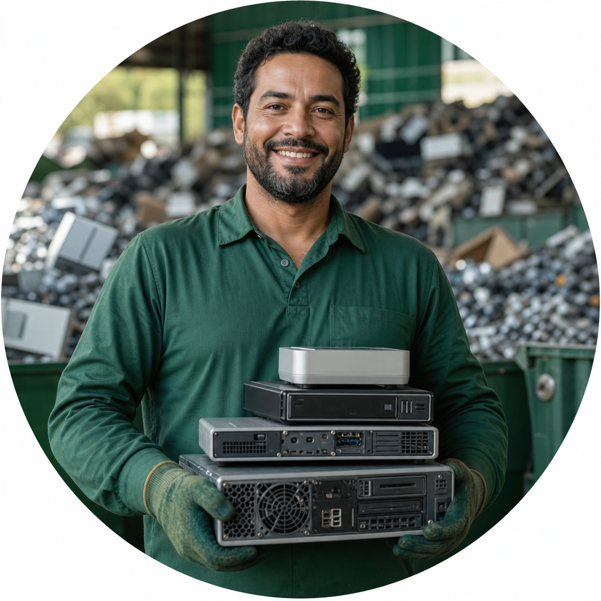

♧
Sustentabilidade
Atuamos com responsabilidade ambiental em cada etapa do processo de reciclagem.
Destinação de Resíduos Eletrônicos, Eletrodomésticos e Sucatas em Geral com responsabilidade, segurança e compromisso com o meio ambiente.
Fale conosco pelo WhatsApp ↗
Atuamos com responsabilidade ambiental em cada etapa do processo de reciclagem.
Destinação segura e adequada conforme as normas ambientais vigentes.
Incentivamos a economia circular e um futuro mais limpo.
Comprometidos com clientes, parceiros e com o planeta que compartilhamos.
 01
01
Coleta e destinação adequada de equipamentos eletrônicos inservíveis, como computadores, monitores, impressoras e celulares.
 02
02Recebemos e destinamos eletrodomésticos fora de uso com responsabilidade e respeito ao meio ambiente.
 03
03Recebemos e destinamos sucatas metálicas e outros materiais recicláveis, contribuindo para a redução de impactos ambientais.
Entre em contato conosco e faça parte dessa corrente do bem.
A Recicladora Martins Soluções Ambientais atua há anos com seriedade e compromisso na coleta e destinação de resíduos eletrônicos, eletrodomésticos e sucatas em geral.
Nosso objetivo é oferecer soluções sustentáveis e eficientes, ajudando a preservar o meio ambiente e contribuindo para um futuro mais limpo e consciente.
Set Parque, São José do Rio Preto – SP